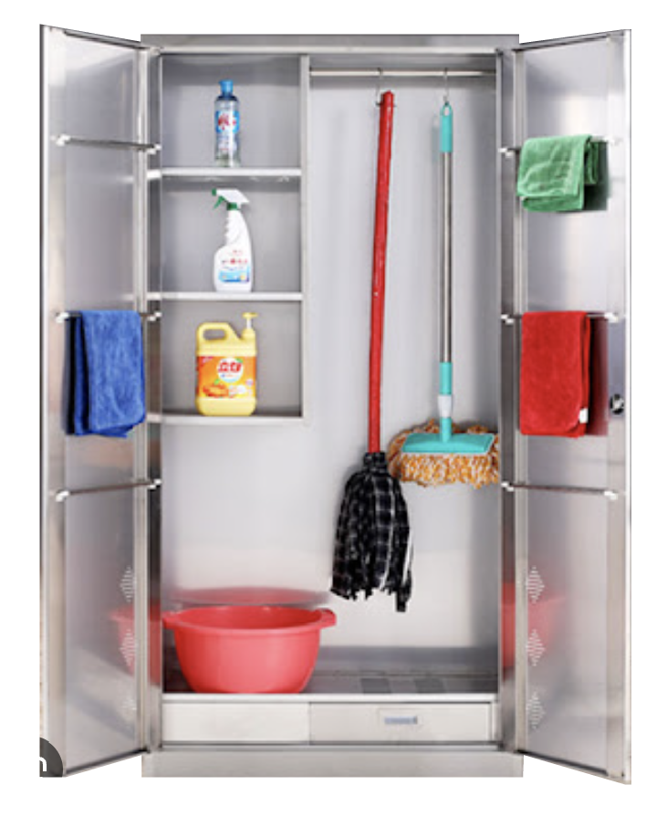

This project is Aim to provide a way to resist the media culture of housework product.
Modern women’s work environment are being shaped by the media culture of domestic product. Even through many products and advertisements are designed by man, but much of the design is centered on the female consumer. These female-centered advertisements for household products influence the world outside of home, where women are seen as naturally suited to cleaning, serving and nursing.
This site is a collective wishlist. By re-editing those product image and text, we can co-create a product list.
After finish the Editing, this site can help you publish and email this wishlist.
There are two recommended editing methods:
1. apply only the product itself and the product's keywords
2. apply only the parts of the image that you think are not related to the product.
1. apply only the product itself and the product's keywords
2. apply only the parts of the image that you think are not related to the product.
After editing,
you can view a wish list of household products you've built together with others. Choose to export for print distribution or email the company of the household product.
you can view a wish list of household products you've built together with others. Choose to export for print distribution or email the company of the household product.
Practices and Discourse
-Cyberfeminism index & A CYBERFEMINIST MANIFESTO FOR THE 21ST CENTURY
These two project are the key practice references for my project.
Both of these projects are feminist projects centered around the internet. During my process, I wanted to know more about how the internet as a medium can be used for resistance. In the feminism history, people used to use signs, banners and fonts to protest on the street. I thinking about what we can do in the internet when cyber security is becoming more and more fortified.
The 21st Century Cyberfeminist Manifesto is a project that uses technology as an artistic practice that breaks down patriarchal norms of society through faxes, regular mail, pasted posters, billboards, and online post distribution. This project inspired me to experiment with how content should be distributed after engaging the audience in the internet. Therefore, I tried to create archive and distribute the outcome it by mail.
-MECHANICAL Brides： Women and machines from home to office
This book analyzes a range of household products from the 1970s in the United States, looking at branding, product design, and advertising images to analyze how these products constructed and consumed contemporary women. Although these advertisements are linked to the country , and specific time. However, these theories also further helped me analyze modern advertising. For example, the name “Good wife”(好太太) still exists in the product design of modern home appliances in China. Nowadays laundry detergent emphasizes the female-centered selling points of hand-caring and fragrance. In the advertisement of a vacuum cleaner, there still provide a image with female using it with a baby.
The book also highlights the role of graphic design on consumer culture, such as the ability of design to emphasize the emotional and material needs of goods to increase its values. The advertiseme
-Cyberfeminism index & A CYBERFEMINIST MANIFESTO FOR THE 21ST CENTURY
These two project are the key practice references for my project.
Both of these projects are feminist projects centered around the internet. During my process, I wanted to know more about how the internet as a medium can be used for resistance. In the feminism history, people used to use signs, banners and fonts to protest on the street. I thinking about what we can do in the internet when cyber security is becoming more and more fortified.
The 21st Century Cyberfeminist Manifesto is a project that uses technology as an artistic practice that breaks down patriarchal norms of society through faxes, regular mail, pasted posters, billboards, and online post distribution. This project inspired me to experiment with how content should be distributed after engaging the audience in the internet. Therefore, I tried to create archive and distribute the outcome it by mail.
-MECHANICAL Brides： Women and machines from home to office
This book analyzes a range of household products from the 1970s in the United States, looking at branding, product design, and advertising images to analyze how these products constructed and consumed contemporary women. Although these advertisements are linked to the country , and specific time. However, these theories also further helped me analyze modern advertising. For example, the name “Good wife”(好太太) still exists in the product design of modern home appliances in China. Nowadays laundry detergent emphasizes the female-centered selling points of hand-caring and fragrance. In the advertisement of a vacuum cleaner, there still provide a image with female using it with a baby.
The book also highlights the role of graphic design on consumer culture, such as the ability of design to emphasize the emotional and material needs of goods to increase its values. The advertiseme
Systems and Network
As I began to collect images and information about different appliance advertisements, I began to think about what to do with the content. The first thing I thought about was publishing and archiving. In "When Evidence Is Not Enough" it is mentioned that publishing is not just about making a book, but also about choosing what to amplify and releasing that information publicly to attract an audience, Tiktok, live streaming, all of which are acts of publishing. Warner says in Publics and Counterpublics that publishing is more about the actions you go through than the objects you produce. In the beginning of my project, I collected the images and put all the images together into one piece of content. And next I started to think about how I could make the audience become part of this project, so that they could edit it and modify it. So I added text and image editing function to this website.
In this process, I learned what can be done with web publishing. Web publishing includes a whole range of behaviors including posting, stacking, and dropping. This gave me ideas on how to distribute my own documentation. Practical, theoretical, professional Condition
Feminist theory, as well as some analyses of contemporary design, provided the theoretical foundation for my project.
One of the feminist movements, Wages for Housework, mentions the relationship between wages for housework and the economy, work roles, gender, and rights. The book mentions that wages for housework can disrupt the stability of the gendered division of labor in society, which led me to think about the impact of advertisements for housework products on jobs like cleaning and caregiving.
In addition to this, in my last project I also researched the history of domestic kitchens, such as the well-known Frankfurt kitchen. The Frankfurt kitchen was also designed for women, and this kitchen increased women's productivity in the home while also keeping them confined to the kitchen as a space. This is still reflected in some of today's product designs, for example, there are cooktop switches that are on one side, which by default will only have one person cooking.
As I began to collect images and information about different appliance advertisements, I began to think about what to do with the content. The first thing I thought about was publishing and archiving. In "When Evidence Is Not Enough" it is mentioned that publishing is not just about making a book, but also about choosing what to amplify and releasing that information publicly to attract an audience, Tiktok, live streaming, all of which are acts of publishing. Warner says in Publics and Counterpublics that publishing is more about the actions you go through than the objects you produce. In the beginning of my project, I collected the images and put all the images together into one piece of content. And next I started to think about how I could make the audience become part of this project, so that they could edit it and modify it. So I added text and image editing function to this website.
In this process, I learned what can be done with web publishing. Web publishing includes a whole range of behaviors including posting, stacking, and dropping. This gave me ideas on how to distribute my own documentation. Practical, theoretical, professional Condition
Feminist theory, as well as some analyses of contemporary design, provided the theoretical foundation for my project.
One of the feminist movements, Wages for Housework, mentions the relationship between wages for housework and the economy, work roles, gender, and rights. The book mentions that wages for housework can disrupt the stability of the gendered division of labor in society, which led me to think about the impact of advertisements for housework products on jobs like cleaning and caregiving.
In addition to this, in my last project I also researched the history of domestic kitchens, such as the well-known Frankfurt kitchen. The Frankfurt kitchen was also designed for women, and this kitchen increased women's productivity in the home while also keeping them confined to the kitchen as a space. This is still reflected in some of today's product designs, for example, there are cooktop switches that are on one side, which by default will only have one person cooking.